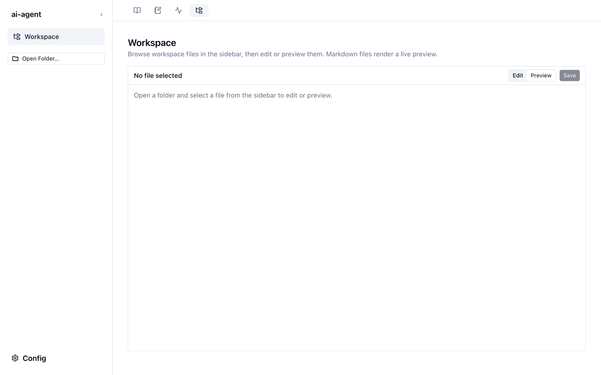

Workspace
Workspace は、手元のフォルダーをブラウザで開き、ファイルを読んだり編集したりする画面です。ブリーフィングやジャーナルの Markdown を整形して読む、メモを書き直す、といった用途に使えます。

Chrome または Edge で使ってください。
Workspace はブラウザの File System Access API を使ってフォルダーを読み書きします。この API がないブラウザ（Safari、Firefox など）では、フォルダーを開けません。
フォルダーを開く
- サイドバーの Open Folder… を押し、開きたいフォルダーを選びます。
- ブラウザが読み書きの許可を求めるので、許可します。
- サイドバーにフォルダーのツリーが表示されます。Filter by filename… でファイル名を絞り込めます。Expand all / Collapse all でツリーをまとめて開閉します。
node_modules や .git など、中身を見る必要のないフォルダーはツリーに出ません。
読む・編集する
ツリーでファイルを選ぶと、右に中身が開きます。
- Markdown、ログ、コードは、最初は整形した表示（Preview）で開きます。Edit に切り替えると書き換えられます。
- そのほかのテキストは Edit で開きます。
- 画像と PDF はそのまま表示します。
- 書き換えたら Save を押します。元のファイルに上書き保存されます。
ファイルはブラウザから直接読み書きします。
Workspace はファイルの中身を brief-lens のサーバーに送りません。開いたフォルダーの中身は、ブラウザがあなたのディスクから直接読み書きします。